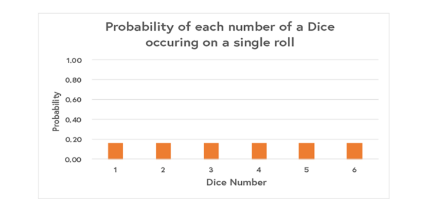

When we flip a coin, or roll a dice, we expect every outcome to have an equal probability.
This is the essence of a uniform distribution; a distribution that describes every event having an equal probability of happening.
When we’re rolling a dice, we expect each and every number to have a 1/6 chance of occurring. We can visualise this as a bar graph:

Similarly, when we ask a computer to randomly generate a real number between 1 and 6 with every number having an equal chance. Observe that the graph shows that each number has a probability of 1/5 occurring.
The first scenario applies the concepts presented above. It is an example of a discrete probability distribution, where discrete refers to the fact that we can count each of the specific values that we’re assigning probabilities to. The second scenario is an example of a continuous probability distribution, where there is an infinite number of values between 1 and 6 that we can choose from.
The ‘Probabilities of a Dice Roll’ graph can be generated by the following code:
barplot(c(1/6, 1/6, 1/6, 1/6, 1/6, 1/6),
names.arg=c("1", "2", "3", "4", "5", "6"),
main="Probability of Each Number of a Dice Occurring on a Single Dice Roll", xlab="Dice Numbers",
ylab="Probability",
ylim=c(0,1)
)
The ‘Probability of Picking a Real Number Between 1 and 6’ graph can be generated by the following code:
plot(c(1:6),
array(1/5, 6),
type="l",
xlim=c(0,7),
ylim=c(0,1),
xlab="Value",
ylab="Probability",
main="Probability of Picking a Real Number Between 1 and 6"
)
polygon(c(1,1,6,6), c(0,0.2, 0.2, 0), angle=30, density=10)
Research the mean, median, mode and variance/standard deviation of both discrete and continuous uniform distributions. Do the results given by the formulas match your intuition as to what you think those values are? Share your thoughts in the discussion forum.